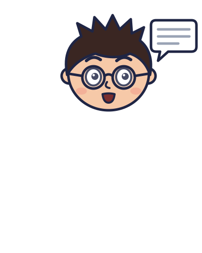
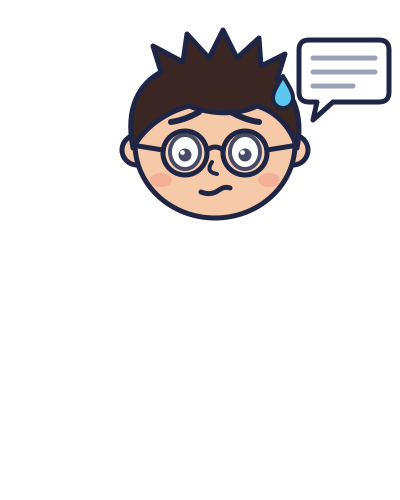
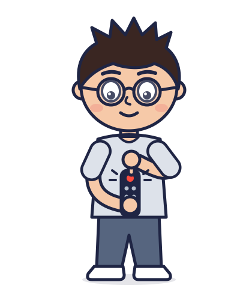
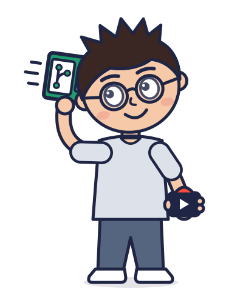

Retour d'expérience · bonnes pratiques SDLC
Travailler avec l'IA :
un stagiaire brillant,
mais amnésique
Ce qui marche, ce qui casse, et comment on l'encadre.
→ pour avancer · ← pour reculer · F pour le plein écran · N pour les notes

L'IA, c'est ton nouveau collègue
Il est brillant. On lui parle comme à un humain.
Pas comme à un système
bug login fix
Comme à un humain
Le login renvoie une erreur 500 quand l'email contient une majuscule. Trouve la cause, corrige-la et ajoute un test. Si un point n'est pas clair, demande-moi.

Brillant, mais il arrive les mains vides.
Il faut l'équiper, puis l'onboarder.


L'usage le plus basique : le LLM
ChatGPT ou Gemini sur le web. Ce n'est que la tête du collègue.

Une petite évolution : le RAG
Il lit tes documents avant de répondre.
Exemple de RAGGemini Notebook

Ajoute un harnais à ton LLM : tu obtiens un agent
Il lit, écrit, lance des commandes, regarde le résultat, et recommence.
Exemples de harnaisClaude CodeCodexGitHub Copilot

Il se souvient : la mémoire sauvegardée
Bien
En local, si tu travailles seul.Mieux
Un dépôt de code comme GitHub, partagé avec l'équipe.Il suit une procédure : les skills
Une recette écrite pour une tâche précise.
Exemples de skillsÉcrire un message de commitRelire une PRRédiger un ADRUne méthode complète : le framework de skills
Les recettes rangées en une méthode, avec des étapes et des rôles.
Exemples de frameworksBMADSpec KitGSDNos règles du jeu : le SDLC d'entreprise
Il surcharge le framework avec nos conventions, notre vocabulaire, nos skills.
L'équiper, couche par couche
- LLMChatGPT · Gemini sur le web
- HarnaisClaude Code · Codex · Copilot
- Mémoire sauvegardéeDes fichiers, mieux : un dépôt GitHub
- SkillsDes recettes
- Framework de skillsBMAD · Spec Kit · GSD
- SDLC d'entrepriseLa surcouche maison
Il connaît l'entreprise.
Pas encore ton projet.
Il faut l'onboarder.
Une image pour toute la présentation
Un nouveau stagiaire, chaque matin.
Brillant
Raisonne vite, comprend à demi-mot, pose de bonnes questions.Amnésique
Chaque session repart de zéro. Rien n'est retenu d'hier.Littéral
Il fait ce qu'on lui dit. Il faut préciser ce qu'on attend en sortie.Donc : on le cadre, on lui fait écrire ce qui compte, on relit son travail et on corrige la cause de ses erreurs.
Sept temps
- 1La mécaniquePourquoi l'IA oublie
- 2La mémoireCe qui n'est pas commité est perdu
- 3Les sessionsUn objectif, une PR
- 4La méthodeUn cadre, pas une obligation
- 5La connaissanceOnboarder le stagiaire
- 6Le cadrageVocabulaire, langue, format
- 7La relectureCorriger la cause, pas le symptôme
LLM, harnais, agent : qui fait quoi ?
Comprendre pourquoi l'IA oublie explique toutes les autres pratiques.
LLM
Du texte en entrée, du texte en sortie.sans état
Harnais
Relance le LLM en boucle : réfléchit, lit des fichiers, appelle des outils.Agent
Une session. Peut déléguer à des sous-agents.Le prompt est une pile, reconstruite à chaque session
La réflexion vient du modèle. La connaissance métier vient de toi.
Ce qui n'est pas commité est perdu
La session oublie. Le repo se souvient.
Session 1
On discute, on décide.PR
On commit ce qui compte.Repo
agent.md et docs en .mdSession 2
Relit le repo, repart de l'état.Où écrire quoi ?
Une seule source de vérité pour les instructions.
agent.md du projetConventions d'équipe, partagées et versionnées.copilot-instructionsRenvoie vers agent.md : pas de doublon.Une préférence change ? Demander à l'IA de l'enregistrer au bon endroit.
Une session, un objectif, une PR
Même logique que « un commit = une chose ».
Session
Un seul objectif.PR
Tout est écrit.Relecture
Puis merge.Session neuve
Mémoire à jour.Isoler le contexte
Moins de contexte pollué, moins d'hallucinations.
Sous-agents
Contexte propre et regard extérieur. Exemple : la review de code, lancée sans l'historique de la discussion.Worktrees
Une copie du projet par session : plusieurs sessions en parallèle, sans toucher à ton local.Skill, BMAD, SDLC : des recettes emboîtées
Un skill guide l'IA comme une recette : « chez moi, on cuit les pâtes dans cette casserole ».
npm install.Un cadre, pas une obligation
Le bon niveau de méthode dépend de la tâche.
Invoquer explicitement
Sans cela, l'IA improvise sans utiliser les skills.Pas toujours adapté
BMAD est verbeux, lourd pour de la discovery. Alternatives citées : GSD, Spec Kit.Surcharger les défauts
Exemple : une review qui doit absolument trouver un défaut, même quand il n'y en a pas.Modèle selon la tâche
Un modèle léger pour extraire, un plus fort pour raisonner.Onboarder le stagiaire
Le coût est au départ. Ensuite, le repo se réutilise.
Sans cadrage : context poisoning
Un document vieux de six mois et des slides récents sont mis au même niveau. Les réponses se mélangent.Un repo de connaissance, plusieurs projets
Un lien dans agent.md suffit à brancher une session sur la bonne source.
Repo de discovery
Questions ouvertes et closes, décisions.Lien dans agent.md
Du repo de code vers la discovery.Session neuve
Lit la discovery, propose un plan, tu valides.Cadrer ce qu'on attend en sortie
Sans cadre, l'IA invente son vocabulaire, son format et sa complexité.
Vocabulaire
Termes métier imposés. Un seul mot par concept.Langues
FR échanges et contenu.EN fichiers, dossiers, commits.
Format
Des schémas et des exemples plutôt que de longs textes.YAGNI / KISS
Contre la sur-architecture (des tests CSS que personne n'a demandés).Humain ou agent
Les instructions pour l'agent vont en commentaires, pas dans le texte lu par l'humain.Structure de doc
Lui faire proposer un plan (par exemple PARA), puis le valider.Corriger la cause, pas le symptôme
Un « retire ça » sans règle écrite, et l'erreur revient.
Je corrige le symptôme
Je corrige la cause
agent.mdLa PR se relit comme celle d'un collègue
Relire beaucoup au début, de moins en moins ensuite.
Relire
Comme un dev externe.Commenter
Review dans la PR.« Prends en compte »
Nouveau commit, nouvelle règle.Garder le pourquoi, s'adapter
Une pratique durable laisse une trace et s'ajuste à celui qui l'utilise.
Historique du pourquoi
Un memo log ou des ADR : savoir pourquoi une règle existe.Recadrer
Pas satisfait ? Une session de recadrage plutôt que s'acharner.Ses habitudes
Exemple : statut du sprint déjà à jour dans la PR, puisque c'est toi qui cliques sur merge.La posture
Pas un moteur de recherche.
On lui demande, on lui explique, on relit. On ne va pas chercher à sa place sur Google.
Plus vite, ensemble.
La courbe d'apprentissage est longue seul. Partager les pratiques en équipe l'accélère.
Le stagiaire, en sept phrases
- 1Il ne retient rien : il faut comprendre pourquoi.
- 2Alors on écrit dans le repo.
- 3Une session, un objectif, une PR.
- 4La méthode est un cadre, pas une obligation.
- 5On l'onboarde : sources, vérité, obsolète.
- 6On cadre ce qu'on attend en sortie.
- 7On relit, et on corrige la cause.